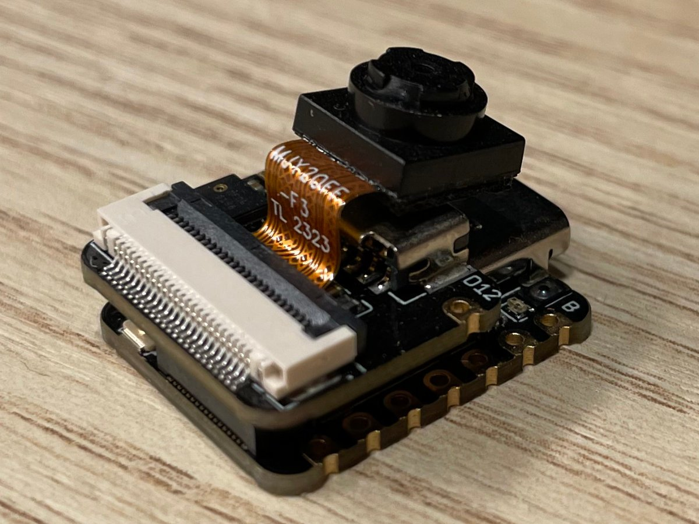
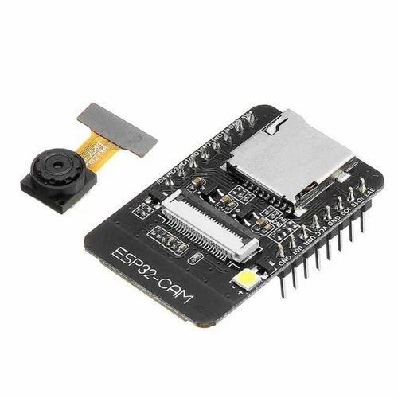
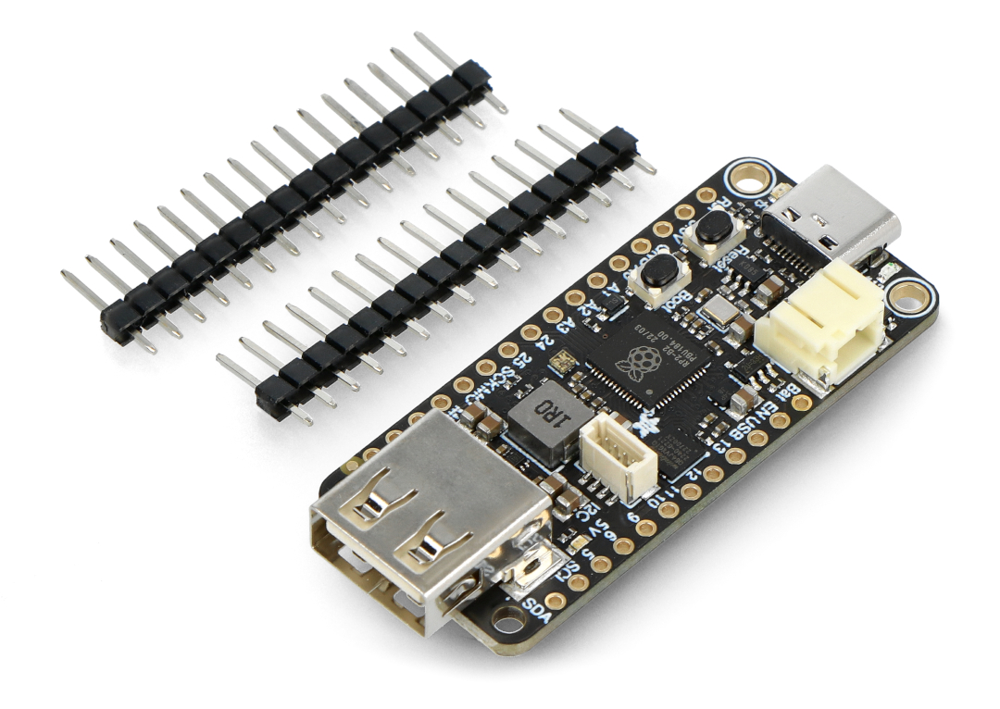

Phase II
Board MPU
In order to record various metrics, such as the rockets' altitude, velocity, angle etc. during its flight, we wanted to configure an MPU with a battery, a barometer and an accelerometer. It needed to be able to record to some storage medium from where we could analyse the data on a computer.
The MPU
Initially, we wanted to stick with the Seeed Studio ESPs we already knew from the despin system. Specifically, the Sense version since it maintained the benefits of form factor, power usage etc., but added an SD card slot for easy logging.

Fig 1: Seeed Studio Xiao ESP32S3 in the Sense configuration
After our severe problems tho, we decided to make the switch to an AI Thinker ESP32, which also includes an SD card slot and was one of the cheapest options available with short shipping times. After failing to understand the flashing process and being frustrated with bad documentaiton, we abandoned these as well.

Fig 2: The AI Thinker ESP32 Cam Board
Next up where Adafruit RP2040s in the USB Host version, a reliable option both of us were familiar with and more than capable of reading sensor data and writing it to a USB.

Fig 3: Adafruit RP2040 USB host
The issues
Unfortunately, this was already quite late in the project and we were running low on time. Since we knew from the beginning there wasn't a lot of time we could allocate to this component, we went with sensors we had used before and could get up to speed with on short notice. For us, this meant the MPU6050 for the accelerometer and the BMP280 for the barometer.
Only three students on the project were somewhat good programmers, namely us two and Theodor Römpp aka FRBFStudios (https://github.com/FRBFStudios). After instructing him on how to use the Arduino IDE to program an RP2040 and pointing him to the sensor libraries, we left it up to him to write the program. After figuring out writing to a USB, which already took a few hours, he encountered issues with the consistency of both the USB sticks we had on hand as well as the file mounting logic as a whole.
This was fixed after some trial and error using different sticks and controllers, until file writing was deemed as done. Next up where the sensors. Guides, instructions, sketch examples and so on - nothing worked. Occasionally, we got a few sensor values. We even got an I2C response code and they showed on scanners. But nothing worked consistent or long enough to be used.
Luckily, our partner DLR was able to provide an MPU in a very similar configuration that was capable of recording the same data. This spared us the waste of time this had proven to be and we stopped trying to do it ourselves.